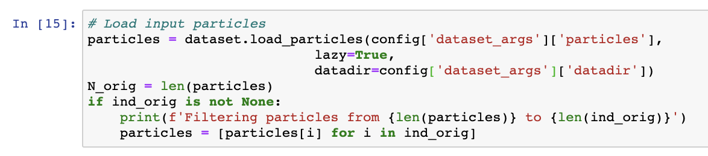
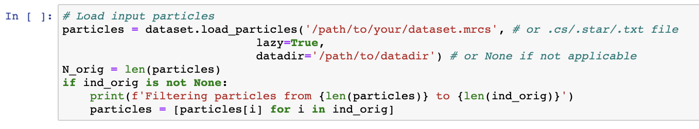

Dealing with large datasets#
Large datasets that do not fit into memory can be trained with the --lazy flag, which loads images on-the-fly instead of all at once at the beginning of training. This can, however, be very slow due to the filesystem access pattern for on-the-fly image loading, especially if the data is not located on a SSD drive.
To reduce the memory requirement of loading the whole dataset, cryoDRGN contains a new tool cryodrgn preprocess that performs some of the image preprocessing done at the beginning of training. Separating out image preprocessing significantly reduces the memory requirement of cryodrgn train_vae, potentially leading to major training speedups ⚡ ⚡ ⚡ .
The new workflow replaces cryodrgn downsample with cryodrgn preprocess:
# Replace `cryodrgn downsample` with `cryodrgn preprocess`
cryodrgn preprocess P10_J712_particles_exported.cs \
--datadir P10/exports/groups/P10_J628_particles/J626/extract \
-D 128 \
-o data/preprocessed/128/particles.mrcs
# Parse pose information as usual, specifying the refinement box size with -D
cryodrgn parse_pose_csparc P10_J712_particles_exported.cs \
-D 256 \
-o data/pose.pkl
# Parse CTF information as usual
cryodrgn parse_ctf_csparc P10_J712_particles_exported.cs -o data/ctf.pkl
# Run cryoDRGN with preprocessed particles.ft.txt and extra flag --preprocessed
cryodrgn train_vae data/preprocessed/128/particles.ft.txt \
--preprocessed \
--ctf data/ctf.pkl \
--poses data/pose.pkl \
--zdim 8 \
-n 50 \
-o 00_vae128 >> 00.log
Numbers#
Some numbers for training on a 1,375,854, 128x128 particle dataset (86 GB)
Baseline:
607 GB maximum memory requirement
18.5 min to load the dataset in
cryodrgn train_vae
With new --preprocessed:
200 GB maximum memory requirement
3.2 min to load the dataset in
cryodrgn train_vae
On a single V100 GPU, this dataset trained in approximately 2h,3min per epoch (large 1024x3 model) when fully loaded into memory. Training with on-the-fly data loading (--lazy) was 4x slower, though this can vary widely depending on your filesystem/network.
Technicalities#
Using
cryodrgn preprocessin place ofcryodrgn downsamplemeans that images will be windowed (circular mask applied in real space) before they are downsampled. This is slightly different than in the original workflow where images are first downsampled, then the mask is applied during training. To exactly replicate the previous behavior, runcryodrgn downsampleas usual, then runcryodrgn preprocesson the downsampled dataset.Viewing particle images in cryoDRGN_viz.ipynb and cryoDRGN_filtering.ipynb will now show Fourier space images. A current workaround is to overwrite the path with the original particles when loading particle images in the jupyter notebook:
Before

After (modifications to dataset.load_particles arguments)

Still too large#
If your dataset is still too large to load into memory, we recommend training on a subset of the images such that the dataset can fit into memory (e.g. split your dataset into two halves and run independent training jobs on each half). A random selection of half of your dataset can be generated with the utility cryodrgn_utils select_random:
# select 200k random particles out of a dataset containing 1,375,854 particles
(cryodrgn) $ cryodrgn_utils select_random 1375854 -n 200000 -o ind200k.pkl
Additional updates and information on chunked data loading are tracked here zhonge/cryodrgn#17.